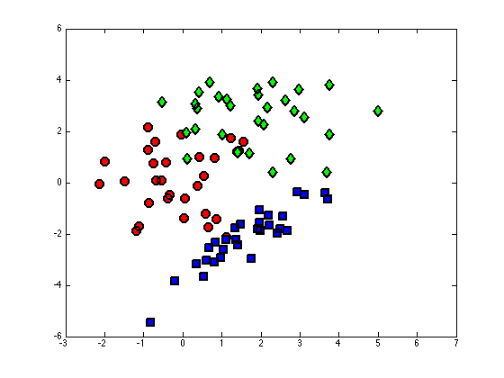
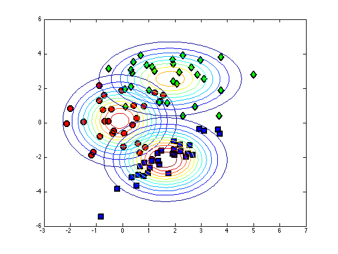

Contents
plotcc.m
From A First Course in Machine Learning, Chapter 5. Simon Rogers, 01/11/11 [simon.rogers@glasgow.ac.uk] Computing and plotting class-conditional densities for a Bayes classifier
clear all;close all;
Load the data
load ../data/bc_data % Plot the data cl = unique(t); col = {'ko','kd','ks'} fcol = {[1 0 0],[0 1 0],[0 0 1]}; figure(1); hold off for c = 1:length(cl) pos = find(t==cl(c)); plot(X(pos,1),X(pos,2),col{c},... 'markersize',10,'linewidth',2,... 'markerfacecolor',fcol{c}); hold on end xlim([-3 7]) ylim([-6 6])
col =
'ko' 'kd' 'ks'
 Fit class-conditional Gaussians for each class
Using the Naive (independence) assumption
for c = 1:length(cl) pos = find(t==cl(c)); % Find the means class_mean(c,:) = mean(X(pos,:)); class_var(c,:) = var(X(pos,:),1); end
Plot the contours
[Xv,Yv] = meshgrid(-3:0.1:7,-6:0.1:6); for c = 1:length(cl) temp = [Xv(:)-class_mean(c,1) Yv(:)-class_mean(c,2)]; tempc = diag(class_var(c,:)); const = -log(2*pi) - log(det(tempc)); Probs = exp(const - 0.5*diag(temp*inv(tempc)*temp')); contour(Xv,Yv,reshape(Probs,size(Xv))); end
Repeat without Naive assumption
class_var = []; for c = 1:length(cl) pos = find(t==cl(c)); % Find the means class_mean(c,:) = mean(X(pos,:)); class_var(:,:,c) = cov(X(pos,:),1); end
Plot the contours
figure(1); hold off for c = 1:length(cl) pos = find(t==cl(c)); plot(X(pos,1),X(pos,2),col{c},... 'markersize',10,'linewidth',2,... 'markerfacecolor',fcol{c}); hold on end xlim([-3 7]) ylim([-6 6]) [Xv,Yv] = meshgrid(-3:0.1:7,-6:0.1:6); for c = 1:length(cl) temp = [Xv(:)-class_mean(c,1) Yv(:)-class_mean(c,2)]; tempc = class_var(:,:,c); const = -log(2*pi) - log(det(tempc)); Probs = exp(const - 0.5*diag(temp*inv(tempc)*temp')); contour(Xv,Yv,reshape(Probs,size(Xv))); end